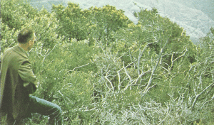
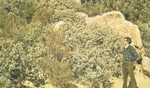
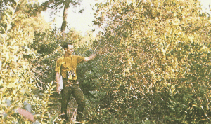
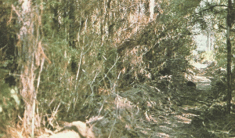

|
|
Fire Behavior Fuel Model 4 -- Chaparral |
Anderson (1982) classifies Fire Behavior Fuel Model 4 in the Shrub Fuel Type and describes it as follows:
Fire intensity and fast-spreading fires involve the foliage and live and dead fine woody material in the crowns of a nearly continuous secondary overstory. Stands of mature shrubs, 6 or more feet tall, such as California mixed chaparral, the high pocosin along the east coast, the pine barrens of New Jersey, or the closed jack pine stands of the north-central states are typical candidates. Besides flammable foliage, dead woody material in the stands significantly contributes to the fire intensity. Height of stands qualifying for this model depends on local conditions. A deep litter layer may also hamper suppression efforts.
Anderson's (1982) photographs 9, 10, 11, and 12 are examples of fuels fitting this model.
|  | Anderson (1982) Photo 9, Fire Behavior Fuel Model 4. Mixed chaparral of southern California, USA; note the dead fuel component in the branchwood. |
|  | Anderson (1982) Photo 10, Fire Behavior Fuel Model 4. Chaparral composed of manzanita and chamise near the Inaja Fire Memorial, California, USA. |
|  | Anderson (1982) Photo 11, Fire Behavior Fuel Model 4. Pocosin shrub field composed of species like fetterbush, gallberry, and the bays. |
|  | Anderson (1982) Photo 12, Fire Behavior Fuel Model 4. High shrub southern rough with a quantity of dead limbwood. |